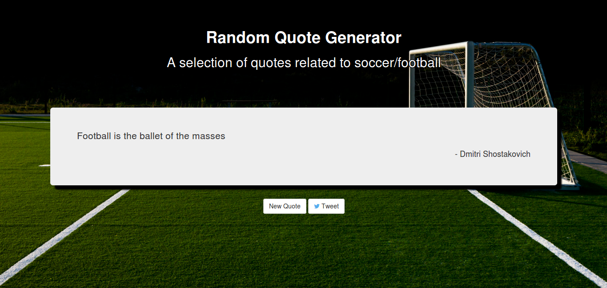

Anthony Bruno
HomeBlog
Projects
GitHub
Projects
Web Development | ProgrammingWeb Development
Big Sing Festival Website - Source Code
Technologies used: PHP, HTML, CSS, XML
Made for an assignment during my Computer Science course. The design is rather minimal as the project focused on functionality. Features include: Login/Logout/Signup system, search function and integration with XML documents.
This Website! - Source Code
Technologies used: HTML, CSS, Jekyll
Personal website that is hosted on Github pages.
Quote Generator - Source Code
Technologies used: HTML, CSS, Bootstrap, JavaScript
Random quote generator completed as one of the projects for FreeCodeCamp. Displays a random soccer related quote from an array when the 'new quote' button is pressed. Allows the user to tweet the quote by pressing the tweet button.
Bootstrap Portfolio - Source Code
Technologies used: HTML, CSS, Bootstrap

Personal portfolio page made during FreeCodeCamp. Uses Bootstrap elements such as: Fixed navbar, buttons and images.
Programming
Chat Client - Source Code
Technologies used: Java
Chat client that was created during my Computer Science course. Was created to send and receive messages through a relay server using a stop-and-wait ARQ protocol. Also implements reliability (detects if received message is corrupted, if so, sends 'send-again' message)